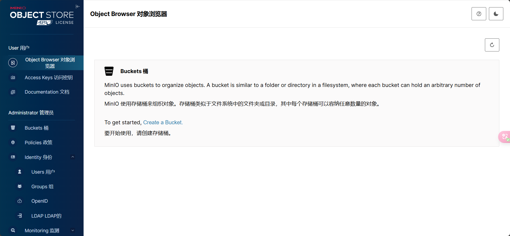
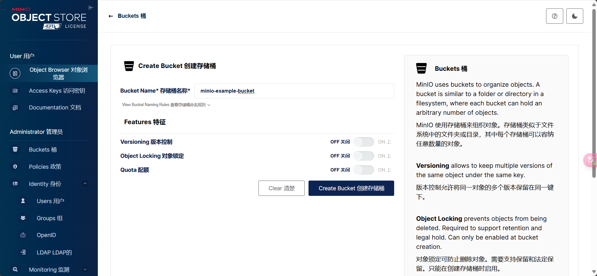
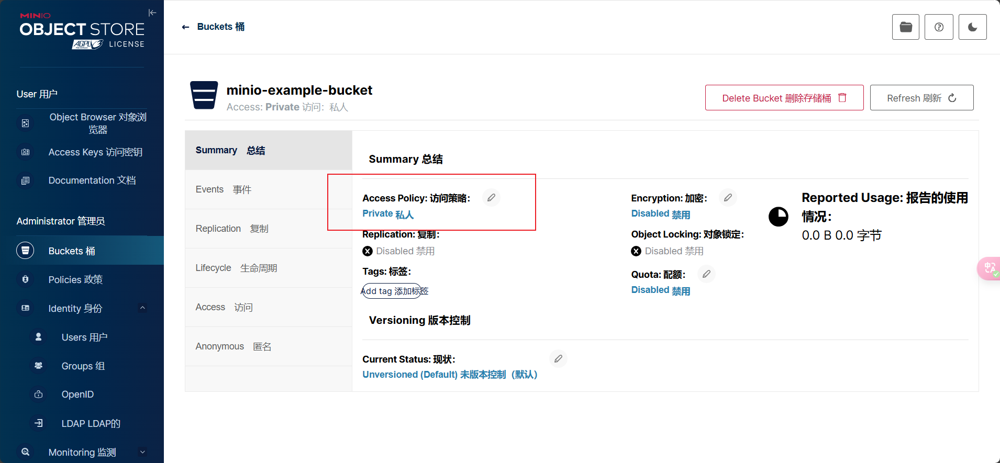
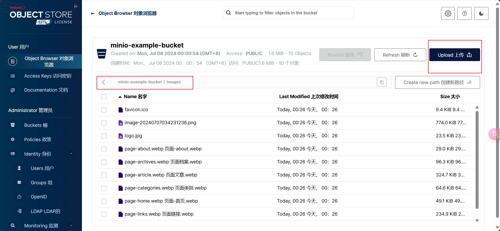
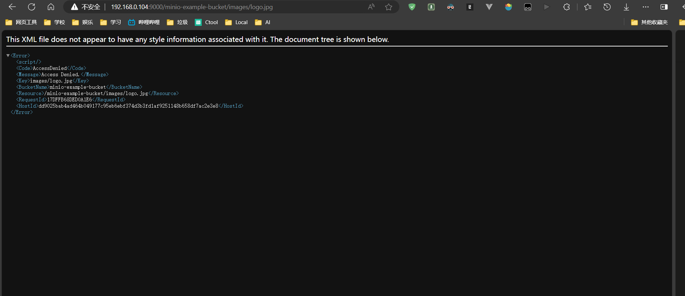

Minio对象存储
Minio对象存储
hexo template generate by typora plugin templater
安装
Docker 快速安装 minio
1 | |

MinIO root 用户
MinIO部署中有一个名为 root 的用户，该用户可以访问部署上的所有 操作和资源，无论配置了哪种 身份管理器（identity manager）。当一个MinIO服务器首次启动时， 它会通过检查以下环境变量的值来设置 root 用户的凭据：
MINIO_ROOT_USERMINIO_ROOT_PASSWORD
要轮换根用户凭据，需要更新部署中所有MinIO服务器上 的一个或两个环境变量。为根凭据指定 长、 唯一且随机 的字符串。 在存储访问密钥和秘密密钥时， 应采取所有可能的预防措施，以确保只有那些已知且受信任且 需要 超级用户访问权限的个人才能检索到 root 凭据。
- MinIO 强烈建议 不要在任何环境（开发、测试或生产） 中使用
root用户进行常规客户端访问。 - MinIO 强烈建议 创建用户，以便每个客户端都能访问 到执行其分配的工作负载所需的最小动作和 资源集。
如果这些变量未设置，minio 将默认使用 minioadmin 作为 访问密钥，以及 minioadmin 作为秘密密钥。 MinIO 强烈建议 不要在任何部署环境中 使用默认凭据。
创建桶


桶默认可以有三种Access Policy策略：
public : 不经过任何认证可以直接访问资源
private : 桶设置为private后，未经授权不能进行任何操作，所有Access Rules失效
custom : 这种Access Policy策略是通过如下自定义Access Rules出现的
readonly : 可以设置资源不经过授权，只能读取
writeonly : 资源不经过授权，只能写入
readwrite 资源不经过授权，可读可写

手动上传一些测试文件到 minio-example-bucket/images
设置桶策略为 public 时 , 访问资源 logo.jpg
路径为 API地址/桶/路径/文件
1 | |
访问成功
修改成 private后再次访问
